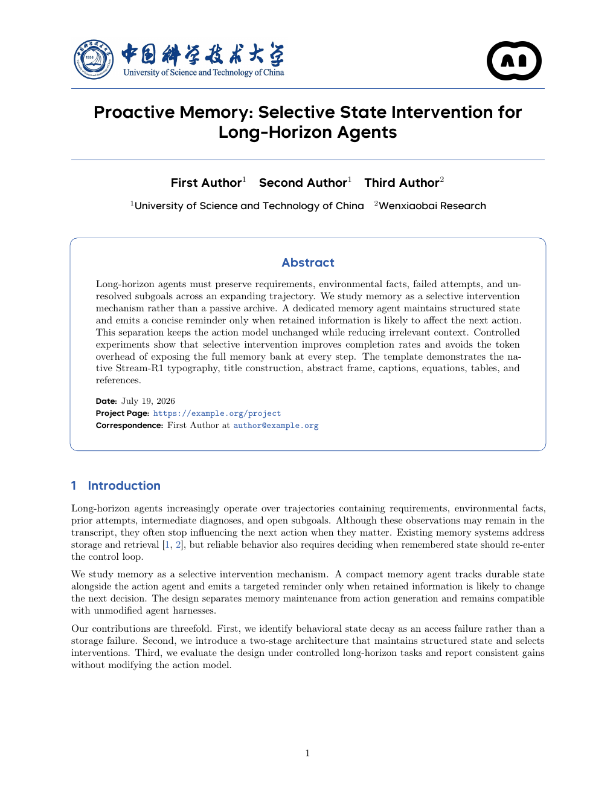
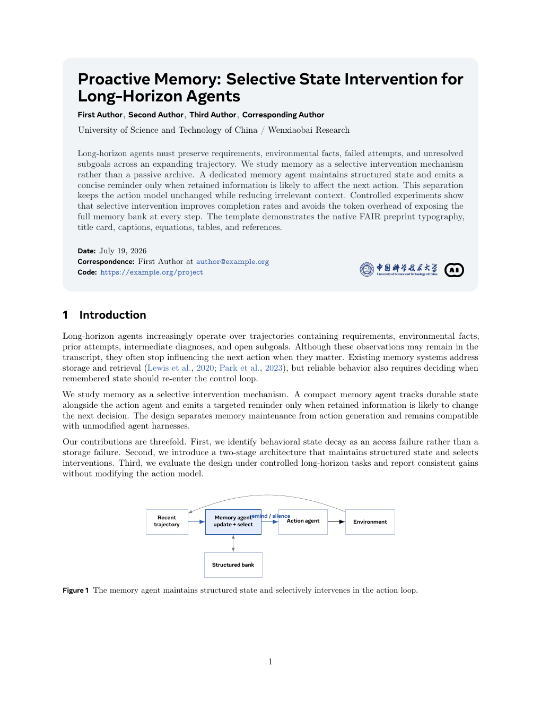

BASE 01
Seed Classic
明确的蓝色横线、居中作者区和描边摘要框。ByteSans 标题配合 Computer Modern 正文，适合方法密集、结果明确的技术论文。
- TypographyByteSans + Computer Modern
- StructureRules / centered title / framed abstract
- Best forSystems · Models · Benchmarks
WENXIAOBAI × USTC RESEARCH
从论文原始 LaTeX 类文件出发，保留真实的字体、页边距与标题结构。Seed 更锐利、技术感更强；Meta 更克制、叙事感更完整。


01 / THE ORIGINALS
经典版只使用最稳妥的默认配色，让字体、结构和信息层级先说话。
明确的蓝色横线、居中作者区和描边摘要框。ByteSans 标题配合 Computer Modern 正文，适合方法密集、结果明确的技术论文。
大面积圆角信息卡将标题、作者、摘要和元数据收进一个叙事入口。Optimistic 标题更现代，正文仍保持经典学术阅读节奏。
02 / THE COLOR LIBRARY
两个 Base 共用同一组主题选项。选择一种颜色，预览会同步切换对应的 PDF 与问小白图标。
SEED / USTC BLUE
最接近原始论文气质的选择。冷静、可信、适合大多数计算机科学论文。
\documentclass[ustc]{seed}
\documentclass[jade]{seed}
\title{Your Research Title}
\author{First Author \quad Second Author}
\begin{document}
\maketitle
...\documentclass[wine]{meta}
\title{Your Research Title}
\author{First Author}
\affiliation{USTC / Wenxiaobai Research}
\begin{document}
\maketitleSource provenance